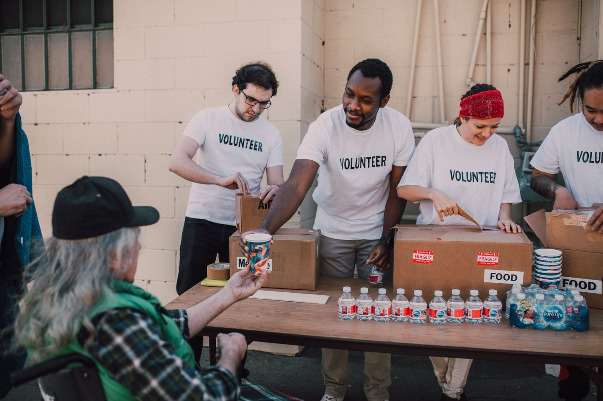
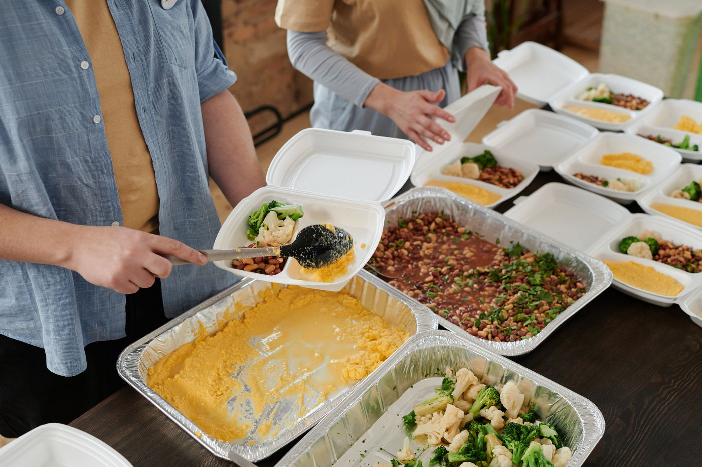

Build understanding.
Read and share our research. Ask classmates what support would be useful. Consider whether you could help with outreach, research, or future volunteer coordination.
Building a useful program begins with people, practical ideas, and reliable connections.
Read and share our research. Ask classmates what support would be useful. Consider whether you could help with outreach, research, or future volunteer coordination.
Consider when safe, unserved surplus is available and discuss a possible recovery arrangement with established food assistance providers.
Help identify relevant campus offices and existing food assistance services. Offer feedback on the proposal’s accessibility and usefulness.
Community volunteers show how donating, sorting, and preparing food can bring people together.

Photo by RDNE Stock project on Pexels.

Photo by Julia M Cameron on Pexels.

Photo by Julia M Cameron on Pexels.
Illustrative stock photos of community food assistance. These are not Campus Food Connect events.